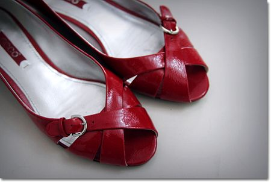

好迷Nik Jay这忧伤的丹麦语说唱“Kan Du Høre Hende Synge ” ，大致歌词如下：
这个故事讲述的并不是Nik og Jay，而是我们遇见的一个小女孩，她告诉我们她的故事：
**她十岁的时候又转学了，两年里的第三次是她的规律。她离家的时候知道自己会面临什么，同样的show，同样的恨，同样的嘲笑。她是班里的丑女- 学校是地狱。她玩的都是同一个游戏，只有自己作伴。曾选择改变，但很快放弃。她学会仇恨自己，自己的脸，身体。谎报病假，恐惧上课，逃离学校。她惶恐 - 每夜都独自哭泣。她妈妈无动于衷，如果她偶尔能回家一趟的话。她是四兄妹中最小的，人们从来不注意她。继父酗酒。如果给他机会就送上两巴掌，只要妈妈没看见。所以你能看见她心碎在小巷的秋千上，你会听见她唱。。。
**她参加了一个疯狂的私人party，迷惑了，困扰了，找不到轨迹。幸福在她喝醉时来临，而就像往常她将自己灌醉了。昏晕，半裸地躺在床上，一个男孩在她身旁，房门没有锁。她太累了，无力反抗，闭上眼睛，想着别物。梦想着当上乐队主唱手，刊物的主角和拥有很多粉丝。
**秋天来了，她怀孕了，她无所谓。在大街上人们对她竖中指和嘲笑。孤独的男人是她的常客，越来越多。她得有钱来买酒精、毒品、婴儿衣物和尿布。但是小孩被拿走了，而她想着：“让地狱开始吧。”
可以听得见她唱：
她开始写关于光明与黑暗的诗，黑暗为主。她呼喊援助，无人响应。她站在火车总站，开始下雪，她开始回家，天已发亮了。她将最爱的碟放入音响。独自呆在空荡的房间，手上抓着一把安眠药的她准备好了。悄声对天使说：来，带我走吧！
她望着镜子流泪，诅咒着她没遇见过的爱情。有人敲着门，但声音没有传进她的耳朵。她渴望她马上要去的地方，你能听见她唱。
他松了口气，当医生告诉他她已恢复了。12个小时里他没有移动半步。他在等待看见她双眼睁开。他在床上发现她，四肢冰冷。她认不出他。他仅仅微笑并轻吻她的脸颊。
他一直爱着她，但是从来没有去追求。而她则离他太远，无法看见。但当他抓紧并轻抚她的手时，她发现可能这一切是真的。
她还在这里，她不再害怕。她闭上眼睛，开心，因为有人听见了她的歌声。
**********************DRESS BLOG***********************



9 Responses to “有人听见了她的歌声。”
2009-05-14
像青花瓷，又有点儿苗族风格的花纹。搭仔裤和大红鞋——-果真一半传统一半叛逆，一半优雅一半嬉皮。
2009-05-14
我最近买了双很喜欢的鞋，桔色，总是想穿灰灰的衣服，来突出它
2009-05-14
那天一眼就看到了，很漂亮！
2009-05-14
一首歌可以唱这么多内容啊，要编成韩剧，怎么也要100集了吧。小T今儿有点波斯呢
2009-05-14
感觉有一点昆明世博会时的感觉
2009-05-14
呃，商量一下。。。能不能不再低头？最近经济是不太景气，不过，也不用太温柔了。还，还有，觉得茶穿那种休闲裤很帅气很好看哦，就像前不久那张牛仔味十足的片子。。。
2009-05-14
茶今天的唇采也很漂亮，和鞋子很配，馨香、晶莹雅致，还是那一低头的柔美，浪漫，最让人怦然心动。 每天都充满期待，期待着一缕清新的茶香：）
2009-05-15
这组照片有点怀旧的清纯。很喜欢这牛仔裤。能问问是什么品牌子的吗? 你最喜欢的服装品牌是哪些?
这首歌很好听。很快就要休假。要去斯德哥尔摩。带着音乐远行，你的这首歌曲将是其中一首。期待中德斯德哥尔摩是深蓝色的，高雅而又神秘。。。想像自己一身黑色装束，淹没在一群神秘的金发美女与帅哥中。。。
2009-05-15
牛仔裤是PAUL SMITH的；
有段时间特别喜欢上海的一个服装品牌DECOSTER和韩国的XMLS，我的衣服风格比较杂，一个品牌很难满足需求。
倒会特别挑鞋的品牌，舒服，品质好，其次才是设计。买鞋跟着品牌走大部分时候不会有意外发生。
斯德哥尔摩是宜家、H&M的故乡啊~地标Nordiska Kompaniet百货公司据说有近百年历史了，英格丽·褒曼从影前曾经担任过这家百货公司的售货员。瑞典可能是最接近于共产主义的国家了，呵呵~到那里别忘记买张“斯德哥尔摩卡”，是斯德哥尔摩巿正式的观光旅游卡，好处多多~祝你假期愉快！
Leave A Reply
存档只读，评论已关闭。